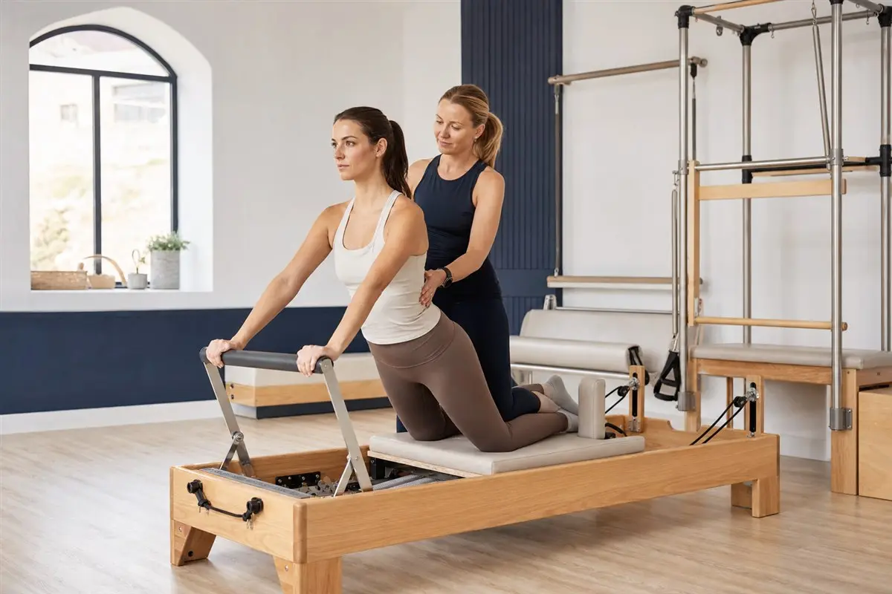
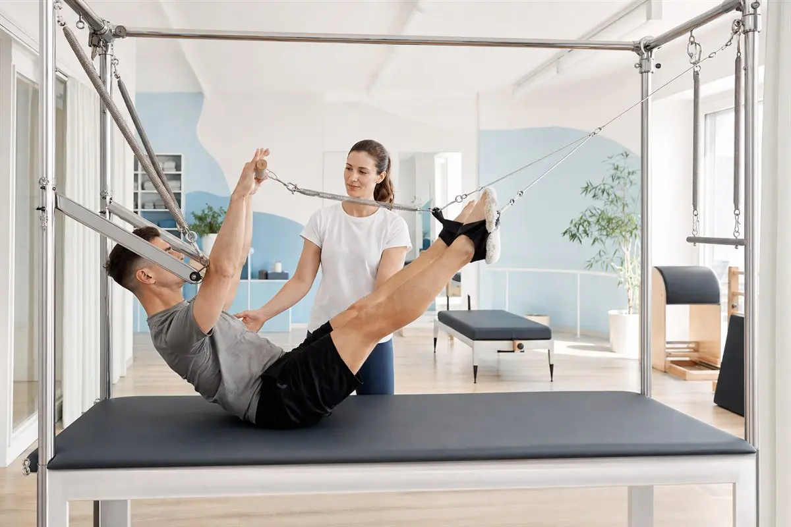

Fisioterapia
Prevenção, tratamento e recuperação de movimentos.
Guarujá · Baixada Santista
Fisioterapia, Pilates, Estética Avançada e atendimento Home Care em uma experiência próxima, segura e individualizada.
Especialidades
Prevenção, tratamento e recuperação de movimentos.
Força, mobilidade, equilíbrio e consciência corporal.
Protocolos faciais e corporais individualizados.
Tecnologia e acompanhamento profissional.
Atendimento fisioterapêutico domiciliar mediante avaliação e agendamento.

Responsável pela Health
Dra. Carolina Paes
Fisioterapeuta e responsável pela Health Especialista Hospitalar · Especialista em Dermato Funcional
Atendimento próximo, individualizado e direcionado às necessidades de cada pessoa, tanto na clínica quanto em atendimento domiciliar.
Parcerias e facilidades
A Health atende por meio de parcerias e benefícios. Consulte com a equipe os planos, serviços elegíveis e a disponibilidade.
Conheça a clínica
Veja mais registros dos atendimentos e do espaço da Health.
Abrir galeria de fotos →

Atendimento domiciliar
Atendimento no domicílio para pessoas que necessitam de acompanhamento profissional com mais segurança, praticidade e comodidade.
Consultar Home Care ↗Seu próximo passo